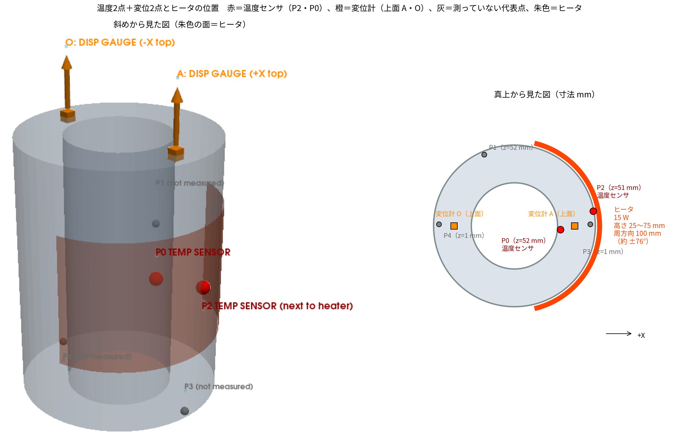
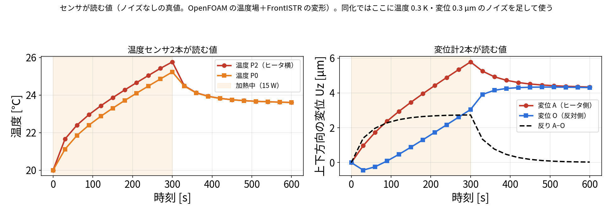
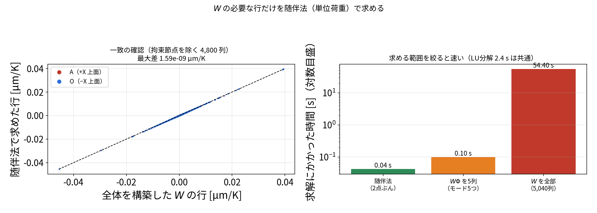
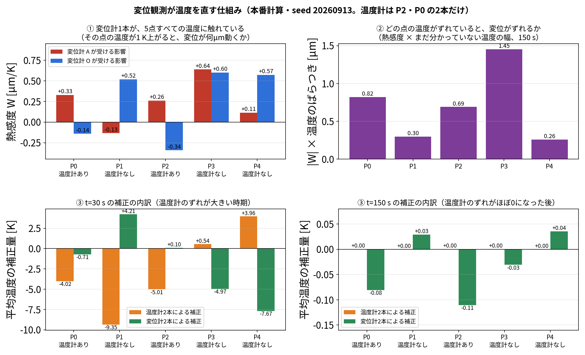

この記事では、本研究の主な結果
同化なし 4.6 K → 温度2点＋変位2点 で同化すると 0.16 K、発熱量は真値 15 W に対して 14.9 W
を出した計算が、実際に何をしているかを、センサの読みから数式まで順に追います。
数値はすべて本研究の本番の計算（run/run_da_compare.py）と、同じ計算を再実行して途中の値を記録した
run/trace_displacement_and_Q.py（結果
results/trace_displacement_and_Q.json）の実際の値です。説明用の仮の値は使っていません。
| 内容 | |
|---|---|
| 確かめたいこと | 温度2点と変位2点の観測を、EnKF でどう使って、温度5点・発熱量・放熱を推定しているのか。とくに変位をどう同化に入れるかと、測っていない発熱量がなぜ直るのか |
| 題材 | 片側にヒータ（15 W）が付いた中空円筒（外径 75 mm、内径 40 mm、高さ 100.5 mm、鋼、底面固定）。0〜300 秒加熱、300〜600 秒は自然冷却 |
| 真値（正解） | ROM で作った模擬データ（双子実験）。実機の測定ではありません |
| 観測 | 温度2点（P2・P0）＋ 上面の変位2点（A・O の \(U_z\) ）。30 秒ごとに20回 |
| ノイズ | 温度 0.30 K、変位 0.30 µm（標準偏差） |
| 同化の設定 | EnKF、60メンバー、偏差膨張 1.02、seed 20260913〜17 の5回 |
| 推定するもの | 代表5点の温度、発熱倍率 \(q\) （ \(Q=15q\) W）、放熱係数 \(h\) の7つ |
| 評価 | 加熱期 0〜300
秒の平均。数値は本番の計算（run/run_da_compare.py）と
run/trace_displacement_and_Q.py の実測値 |
注意：この記事の構成は、評価している A・O をそのまま観測に使っています（§7-4 の循環の問題）。 A・O を測らずに当てた結果は blog_008 §6 にあります。
この記事で分かること 1. どこに何のセンサを付け、何を読んでいるか 2. 変位を「状態」に入れずに、温度から計算して同化に使う方法 3. 測っていない発熱量 \(Q\) が、なぜ直るのか（実際の数値で） 4. この研究の優位性（実際にやったことで言えること）
関連：EnKF の一般的な説明は blog_003、POD と変位の写像は blog_004 §7-0、センサの置き場所は blog_005 §4-6。

左：斜めから見た図。右：真上から見た図（ヒータの周方向の範囲と、各点の高さ z）。
| センサ | 個数 | 場所 | 測るもの |
|---|---|---|---|
| 温度センサ（熱電対） | 2本 | P2（ヒータのすぐ横、高さの真ん中）と P0（同じ +X 側、高さの真ん中） | その点の温度 |
| 変位計（ダイヤルゲージ） | 2本 | 上面の A（+X 側、ヒータ側）と O（−X 側、反対側） | 上下方向にどれだけ伸びたか（ \(U_z\) ） |
題材は、片側にヒータが付いた中空円筒（外径 75 mm、内径 40 mm、高さ 100.5 mm、鋼）です。底面を固定しています。
ヒータの位置（図の朱色）：外周の +X 側に巻いたヒートマットです。
| 項目 | 値 |
|---|---|
| 中心 | +X 方向（角度 0°）、高さ 50.25 mm |
| 高さ方向の範囲 | 25.25〜75.25 mm（50 mm） |
| 周方向の範囲 | 外周に沿って 100 mm（約 −76°〜+76°） |
| 発熱 | 0〜300 秒に 15 W、300〜600 秒は切って自然に冷やす |
（102_0_openfoam_hollow_cylinder_heat_transfer/config/geometry.yaml
の設定）
この計算は本物の実験ではなく、計算で作った模擬データ（双子実験）です。センサの値は計算結果にノイズを足して作りました。

OpenFOAM で計算した温度場と、その温度場を FrontISTR に入れて計算した変形。ノイズなしの値。
| 時刻 | 温度 P2 | 温度 P0 | 変位 A | 変位 O | 反り A−O |
|---|---|---|---|---|---|
| 0 秒 | 20.00 ℃ | 20.00 ℃ | 0.00 µm | 0.00 µm | 0.00 µm |
| 30 秒 | 21.66 | 21.12 | 0.97 | −0.43 | 1.40 |
| 150 秒 | 23.86 | 23.30 | 3.46 | 0.89 | 2.57 |
| 300 秒（加熱終了） | 25.77 | 25.23 | 5.78 | 3.05 | 2.73 |
| 600 秒 | 23.61 | 23.61 | 4.34 | 4.31 | 0.03 |
同化では、ここに温度 0.3 K、変位 0.3 µm（標準偏差）のノイズを足した値を「測った値」として使います。 （本番の計算では、この値を ROM と後述の変位の写像で作っています。OpenFOAM＋FrontISTR で直接作った上の値との差は、温度場で 0.001 K、反りで 0.001 µm でした。）
30 秒ごとに、次の4つを 20 回（600 秒まで）繰り返します。
①観測データの作り方（双子実験）／②予報観測 \(Y_f\) の作り方／③EnKF の更新式。
以下、これを数式で1つずつ書きます。
| 記号 | 意味 |
|---|---|
| \(T_0,\dots,T_4\) | 代表5点 P0〜P4 の温度 [K] |
| \(q\) | 発熱の倍率。発熱量は \(Q=15q\) [W]（真値は \(q=1\) 、つまり 15 W） |
| \(h\) | 放熱の係数 |
| \(i\) | 60 個のメンバーの番号（ \(i=1,\dots,60\) ） |
| \(y\) | 測った4つの値（温度2つ、変位2つ） |
| \(Y_i\) | メンバー \(i\) が正しいとしたときに、センサが読むはずの4つの値 |
7個の値を並べます。
\[ z=(T_0,\ T_1,\ T_2,\ T_3,\ T_4,\ q,\ h)^{\mathsf T} \]
| 成分 | 最初のばらつかせ方 |
|---|---|
| 温度 | 気温 20 ℃ の −3〜+12 K（一様乱数） |
| \(q\) | 0.3〜1.8（＝4.5〜27 W） |
| \(h\) | 平均 0.02、標準偏差 0.01 |
最初の 60 メンバーの平均は \(Q=17.09\) W でした。
各メンバー \(i\) を、自分の \(q_i\) と \(h_i\) を使って ROM（5点の熱回路）で 30 秒進めます。
\[ C_k\frac{dT_k}{dt}=\sum_j K_{kj}\,(T_j-T_k)\;+\;15\,q_i\,\delta_{k,\mathrm{heater}}\;-\;h_i\,(T_k-T_\mathrm{air}) \]
センサは4つです。
\[ y=\big(T(\mathrm{P2}),\ T(\mathrm{P0}),\ U_z(A),\ U_z(O)\big)^{\mathsf T} \]
温度の2つは、状態の \(T_2\) と \(T_0\) をそのまま取り出すだけです。
変位の2つは状態に入っていないので、温度から計算します。ここが「変位を同化に使う」ための中心部分なので、実際にやったことを順に書きます。
変位は状態に入れないので、温度から変位を計算する仕組みが要ります。 ここでは、いちばん素直な「熱感度 \(W\) を使う方法」から順に説明します。
熱弾性は温度について線形なので、温度と変位の関係は行列1つで書けます。
\[ u=W\,(T-T_\mathrm{ref}) \]
| 記号 | 中身 | 大きさ |
|---|---|---|
| \(T\) | 全 5,040 節点の温度 | 5,040 |
| \(W\) | 熱感度（温度 → 変位の表） | 15,120 × 5,040 |
| \(u\) | 全節点の変位（5,040 節点 × 3 方向） | 15,120 |
\(W\) の \((i,j)\) 成分の意味は、そのまま読めます。
節点 \(j\) の温度が 1 K 上がると、変位自由度 \(i\) が何 µm 動くか
代表5点について、上面 A・O の上下変位に対する値はこうなっています。
| P0 | P1 | P2 | P3 | P4 | |
|---|---|---|---|---|---|
| A の \(U_z\) [µm/K] | +0.329 | −0.134 | +0.261 | +0.639 | +0.115 |
| O の \(U_z\) [µm/K] | −0.141 | +0.520 | −0.343 | +0.601 | +0.573 |
「P3 の温度が 1 K 上がると A が 0.639 µm 上がる」と、物理的にそのまま読めます。
FrontISTR が解いているのは
\[ K_s\,u=H_T\,(T-T_\mathrm{ref}) \]
なので、 \(W=K_s^{-1}H_T\) です。実際に作るには2つの向きがあります。
| 向き | FrontISTR に入れるもの | 1回の求解で得られるもの | 全部欲しいときの回数 |
|---|---|---|---|
| 列で作る | 「節点 \(j\) だけ 1 K 上げる」 | \(W\) の 1列 | 5,040 回（54 秒） |
| 行で作る（随伴法） | 「点 \(i\) に単位荷重を掛ける」 | \(W\) の 1行 | 知りたい点の数だけ |
行で作る（随伴法）は、 \(K_s\) が対称であることを使います。
\[ W[i,:]=e_i^{\mathsf T}K_s^{-1}H_T=\big(K_s^{-1}e_i\big)^{\mathsf T}H_T=\lambda_i^{\mathsf T}H_T \]
\(\lambda_i\) は「点 \(i\) に単位荷重を掛けたときの変位場」です。 知りたい点に 1 N の力を掛けて1回解けば、その点の「全 5,040 節点の温度に対する感度」が丸ごと出ます。
実際に A・O
の2点で試しました（run/W_rows_by_adjoint.py）。
| やり方 | 求解回数 | 時間 | 全体構築版との差 |
|---|---|---|---|
| 随伴法（A・O の2点） | 2 回 | 0.042 秒 | 1.6×10⁻¹⁵（一致） |
| 全部作る | 5,040 回 | 54.4 秒 | ― |

変位を知りたい点が少ないなら、随伴法が速くて分かりやすいです。
ここで問題が出ます。
同化が推定しているもの ：代表5点の温度（T0〜T4）
W が必要とするもの ：5,040 節点の温度
↑ 5,035 点ぶんの穴があるこの穴を埋めるのが POD です（blog_004 §5）。 \(T_{\mathrm{all}}\) は全節点の温度です。
\[ T_{\mathrm{all}}=\bar T+U_r\,a,\qquad a=U_{rP}^{+}\big(T_5-\bar T_P\big) \]
モードは「5点から全節点の温度を復元する道具」であって、変位の計算のためのものではありません。
ステップ1の式に、ステップ3の温度を代入します。
\[ u=W\big(\bar T+U_r a-T_\mathrm{ref}\big) =\underbrace{W(\bar T-T_\mathrm{ref})}_{\bar u}+\underbrace{W U_r}_{D}\,a \]
\[ \boxed{\ u=\bar u+D\,a,\qquad D=W U_r\ } \]
\(D\) は「 \(W\) にモードを掛けたもの」です。モードを足しているのではありません。
| 記号 | 意味 | 大きさ |
|---|---|---|
| \(\bar u\) | 平均の温度場での変位 | 15,120 |
| \(D=WU_r\) | モード1つあたりの変位分布 | 15,120 × 5 |
\(D\) の列が5本しかないのは、温度場が5つのモードの組み合わせに限られるからです。
ここが実装上のポイントです。 \(D=WU_r\) を計算するのに、 \(W\) を作る必要はありません。
\[ D=WU_r=\big(K_s^{-1}H_T\big)U_r=K_s^{-1}\big(H_T U_r\big) \]
括弧を右に付け替えると、「 \(H_T U_r\) を右辺にして解く」になります。 そして \(H_T U_r\) の \(k\) 列目は「モード \(\varphi_k\) を温度として入れたときの熱荷重」です。
| やること | FrontISTR の操作 |
|---|---|
| \(H_T U_r\) の \(k\) 列目を作る | モード \(\varphi_k\) を節点温度として入力ファイルに書く |
| \(K_s^{-1}\) を掛ける | FrontISTR を1回実行する |
| 答え | 出てきた変位 ＝ \(D_k\) |
つまり、
「モード \(\varphi_k\) を温度だと思って FrontISTR に入れ、普通に解く」を5回繰り返す
だけで \(D\) が手に入ります（平均場で1回足して計 6回）。
# run/run_da_compare.py の build_disp_operator より
uz_mean = run_field(mean[near]) # 1回目：平均の温度場 → ū
for k in range(5):
Dmode[:, k] = run_field(Tref + U[near, k]) # 2〜6回目：モードkを温度として入れる → D_krun_field の中身は、①.cnt に節点温度を書く
→ ②fistr1 を実行 → ③変位を読む、の3つだけです。
| \(W\) から考える | \(D\) から考える | |
|---|---|---|
| 式 | \(u=W(T-T_\mathrm{ref})\) | \(u=\bar u+D\,a\) |
| 分かりやすさ | 物理的に素直（温度 → 変位の表） | モード係数という中間物が要る |
| 作るコスト | 列で 5,040 回（54 秒）／行で数回 | 6 回 |
| 保存サイズ | 194 MB（float64、全体） | 15,120 × 5 の小さな行列 |
| 実機規模 | \(W\) は数百 GB で非現実的 | モード数だけなので変わらない |
理解するときは \(W\) 、実装するときは \(D\) と考えると見通しがよくなります。 両者は \(D=WU_r\) でつながっています。
results/disp_operator.npz
に保存し、以後は読むだけにしています（キャッシュ）。
同化の最中に FrontISTR
を呼ぶことは一度もありません。run/build_full_disp_operator.py）。
FrontISTR は1回解くと全節点の変位を返すためで、blog_008 §6 の
15,120 通りの候補から変位計を選ぶ計算は、これを使っています。上面 A・O の上下方向だけを取り出すと、2行 × 5列です。
| \(D_1\) | \(D_2\) | \(D_3\) | \(D_4\) | \(D_5\) | |
|---|---|---|---|---|---|
| A の \(U_z\) | −0.00773 | −0.00878 | −0.00627 | −0.00654 | +0.00080 |
| O の \(U_z\) | −0.01023 | +0.01195 | −0.00722 | +0.00217 | −0.01082 |
（ \(\bar u\) は A が 3.970 µm、O が 2.601 µm）
\(D_2\) の列を見ると、モード2が増えると A は下がり（−0.0088）、O は上がり（+0.0120）ます。 モード2は「片側だけ熱い」パターンなので、反りを作るモードだと読めます。
§7-1 でできた道具を、同化で使う順に並べます。
| 手順 | 計算 | 行列の大きさ |
|---|---|---|
| ① 5点の温度 → モードの混ぜ具合 \(a\) | \(a=U_{rP}^{+}(T-\bar T_P)\) | 5×5 |
| ② 混ぜ具合 → 変位 | \(u=\bar u+D\,a\) | 2×5（A・O の場合） |
FEM を解かないので一瞬で終わります。 これが ROM を軽くできる理由の一つです。
① 5点の温度から POD の係数を出す。 5点で測った温度と平均場との差 \(\delta\) から、係数 \(a\) を出します。
\[ \delta=T-\bar T_P,\qquad a=U_{rP}^{+}\,\delta \]
\(\bar T_P\) は平均場の5点の温度、 \(U_{rP}^{+}\) は「5つのモードの、5点での値」を並べた 5×5 行列の逆行列です。
| P0 | P1 | P2 | P3 | P4 | |
|---|---|---|---|---|---|
| \(\bar T_P\) [K] | 296.659 | 295.698 | 296.938 | 296.146 | 295.361 |
\(U_{rP}^{+}\) （5×5。行が係数 \(a_1\dots a_5\) 、列が P0〜P4）：
| P0 | P1 | P2 | P3 | P4 | |
|---|---|---|---|---|---|
| \(a_1\) | −6.07 | −5.79 | −23.65 | −48.48 | −59.24 |
| \(a_2\) | −9.37 | 17.62 | −38.45 | −12.46 | 25.62 |
| \(a_3\) | −6.28 | 10.84 | 25.54 | −39.01 | 15.94 |
| \(a_4\) | −23.63 | −10.71 | 14.85 | 14.41 | 5.41 |
| \(a_5\) | 7.84 | −32.51 | −2.49 | 5.48 | 21.81 |
（値が大きく見えるのは、モード \(\varphi_k\) を 20,696 セル全体で長さ1にそろえているので、1セルあたりの値が小さいためです。）
② 係数から変位を出す。
\[ \begin{pmatrix}U_z(A)\\U_z(O)\end{pmatrix}=\bar u+D\,a \]
| 値 | |
|---|---|
| \(\bar u\) （平均場の変位） | A：3.970 µm、O：2.601 µm |
| \(D\) の A 行（モード1〜5） | −0.0077, −0.0088, −0.0063, −0.0065, +0.0008 |
| \(D\) の O 行（モード1〜5） | −0.0102, +0.0120, −0.0072, +0.0022, −0.0108 |
①と②をつなげると、温度から変位への行列 \(W=D\,U_{rP}^{+}\) （2×5）になります。 これが熱感度です。
| 5点の温度が 1 K 上がると | P0 | P1 | P2 | P3 | P4 |
|---|---|---|---|---|---|
| A がどれだけ動くか [µm/K] | +0.33 | −0.13 | +0.26 | +0.64 | +0.12 |
| O がどれだけ動くか [µm/K] | −0.14 | +0.52 | −0.34 | +0.60 | +0.57 |
つまり同化の中で使う変位は、次の一次式です。
\[ \begin{pmatrix}U_z(A)\\U_z(O)\end{pmatrix}=\bar u+W\,(T-\bar T_P) \]
| P0 | P1 | P2 | P3 | P4 | |
|---|---|---|---|---|---|
| 予報温度 \(T\) [K] | 297.366 | 295.304 | 298.191 | 296.583 | 293.997 |
| \(\delta=T-\bar T_P\) [K] | +0.707 | −0.394 | +1.252 | +0.437 | −1.364 |
\[ a=U_{rP}^{+}\,\delta=(28.0,\ -102.1,\ -15.5,\ 5.0,\ -12.1) \]
\[ U_z(A)=3.970+(-0.0077)(28.0)+(-0.0088)(-102.1)+\dots=4.70\ \mu\mathrm m \]
\[ U_z(O)=2.601+(-0.0102)(28.0)+(0.0120)(-102.1)+\dots=1.35\ \mu\mathrm m \]
このメンバーは「発熱が 25.2 W（ \(q=1.68\) ）で、温度も高め」という仮説なので、センサは A＝4.70 µm、O＝1.35 µm と読むはず、ということになります。 60 メンバー全部でこれを計算した平均が、 \(t=30\) 秒の予報平均 A＝6.648 µm、O＝5.186 µm です（§12 の表）。
本研究は双子実験なので、「測った値」も計算で作りました。
注意：測った値も予報も、同じ写像（7-2）で作っています。 写像そのものの誤差は、この計算の結果には出てきません。 OpenFOAM の温度場全体を FrontISTR に直接入れて計算した真値（ \(t=30\) 秒で A＝0.97 µm、O＝−0.43 µm）とは、ROM の係数を決めた 15 W の計算では 0.001 µm 程度しか違いませんでした。新しく計算した条件での違いは、別途計算中です。
更新の式（§11）は、ずれを「温度センサの分」と「変位計の分」に分けて書けます。
\[ \Delta\bar z=K_{:,T}\,d_T+K_{:,u}\,d_u \]
（右辺の1項目が温度センサの分、2項目が変位計の分。 \(K_{:,T}\) はゲインの温度の2列、 \(K_{:,u}\) は変位の2列、 \(d_T,d_u\) はそれぞれのずれ）
| 平均の補正量 | P0 | P1 | P2 | P3 | P4 | \(Q\) [W] |
|---|---|---|---|---|---|---|
| \(t=30\) 秒：温度センサの分 [K] | −4.02 | −9.35 | −5.01 | +0.55 | +3.96 | −3.51 |
| \(t=30\) 秒：変位計の分 [K] | −0.71 | +4.21 | +0.10 | −4.97 | −7.67 | −0.67 |
| \(t=150\) 秒：温度センサの分 [K] | +0.000 | +0.000 | +0.000 | +0.000 | +0.000 | +0.00 |
| \(t=150\) 秒：変位計の分 [K] | −0.081 | +0.029 | −0.110 | −0.031 | +0.036 | −0.82 |
ここがいちばん分かりにくいところなので、3段階に分けて説明します。

本番計算（seed 20260913）の実際の値。温度計は P2・P0 の2本だけで、P1・P3・P4 には温度計がない。
7-2 で見たとおり、変位は5点の温度の足し算です。
\[ U_z(A)=3.970+0.33\,T_0-0.13\,T_1+0.26\,T_2+0.64\,T_3+0.11\,T_4 \]
\[ U_z(O)=2.601-0.14\,T_0+0.52\,T_1-0.34\,T_2+0.60\,T_3+0.57\,T_4 \]
（係数は熱感度 \(W\) [µm/K]、 \(T\) は基準からの温度差）
温度計は1本で1点しか見られませんが、変位計は1本で5点すべてに触れます。 これが決定的な違いです。 特に P3（係数 +0.64 と +0.60）は、どちらの変位計にも強く効いています。
変位の予測が真値より大きければ、上の式の右辺が大きすぎる、つまりどこかの点の温度が高すぎるということです。
ただし、これだけでは「どの点が悪いのか」は決まりません。 図②は「熱感度 \(W\) × まだ分かっていない温度の幅」を点ごとに並べたものです。 P3 が 1.45 µm といちばん大きく、「P3 の温度がずれていると、変位が大きくずれる」と読めます。
最終的に決めるのは、60メンバーの共分散です。60通りの計算の中には
「変位 A を大きく予測したメンバーは、P3 の温度も高く予測している」
という関係が自然にできています。この関係が強い点ほど、変位のずれが大きく配分されます。 これは §9・§10 の \(C_{zy}\) と \(K\) そのもので、人が「P3 を直せ」と指定しているわけではありません。
更新の式を「温度計の分」と「変位計の分」に分けた内訳です（§7-5 の表と同じもの）。
\(t=30\) 秒（温度計のずれが −4.96 K、−4.86 K と大きい時期）
| P0（温度計あり） | P1（なし） | P2（温度計あり） | P3（なし） | P4（なし） | |
|---|---|---|---|---|---|
| 温度計2本による補正 | −4.02 K | −9.35 K | −5.01 K | +0.54 K | +3.96 K |
| 変位計2本による補正 | −0.71 K | +4.21 K | +0.10 K | −4.97 K | −7.67 K |
温度計を置いていない P3・P4 を、変位計が 5〜8 K も直しています。 P3・P4 は底面にあり、温度計（P2・P0、どちらも中段のヒータ側）から遠い点です。
\(t=150\) 秒（温度計のずれがほぼ 0 になった後）
| P0 | P1 | P2 | P3 | P4 | |
|---|---|---|---|---|---|
| 温度計2本による補正 | 0.000 K | 0.000 K | 0.000 K | 0.000 K | 0.000 K |
| 変位計2本による補正 | −0.081 K | +0.029 K | −0.110 K | −0.031 K | +0.036 K |
温度計のずれが 0 になると、温度計は何も直せません。この時期に温度場を直しているのは変位計だけです。
- 変位は5点の温度の足し算なので、変位計1本で5点すべてに触れる。
- 変位がずれていれば、5点の温度のどこかがずれていると分かる。
- どの点をどれだけ直すかは、60メンバーのばらつき（共分散）が決める。
- その結果、温度計を置いていない点の温度まで直る。
これが、温度2点だけの 0.503 K が、変位2点を足すと 0.160 K になる理由です（§7-6）。
同じ計算で、変位計を外して温度2点（P2・P0）だけにした結果です（5 seed
平均、run/run_da_compare.py）。
| 観測 | 温度の誤差（0〜300 秒、5点） | 最終の \(Q\) |
|---|---|---|
| 温度2点だけ | 0.503 K | 14.05 W |
| 温度2点＋変位2点 | 0.160 K | 14.89 W |
（真値 15 W）
\[ \bar z=\frac{1}{60}\sum_i z_i,\qquad \bar Y=\frac{1}{60}\sum_i Y_i \]
\[ dz_i=z_i-\bar z,\qquad dY_i=Y_i-\bar Y \]
偏差は 1.02 倍に広げます（インフレーション。ばらつきが縮みすぎて更新が止まるのを防ぐ）。
\[ C_{zy}=\frac{1}{59}\sum_i dz_i\,dY_i^{\mathsf T}\qquad(7\times4) \]
\[ C_{yy}=\frac{1}{59}\sum_i dY_i\,dY_i^{\mathsf T}\qquad(4\times4) \]
例えば「 \(q\) の大きいメンバーほど \(T(\mathrm{P2})\) が高い」なら、 \(C_{zy}\) の \((q,\ T(\mathrm{P2}))\) 成分は正になります。
\[ K=C_{zy}\,\big(C_{yy}+R\big)^{-1},\qquad R=\mathrm{diag}(0.3^2,\ 0.3^2,\ 0.3^2,\ 0.3^2) \]
\(R\) はセンサのノイズの大きさです（温度は K²、変位は µm²）。
\(K\) は 7×4 の行列で、「センサ \(j\) のずれ 1 単位で、状態 \(k\) をどれだけ直すか」を表します。
各メンバーで
\[ z_i\leftarrow z_i+K\,\big(y+\varepsilon_i-Y_i\big) \]
平均で見ると、次の式です。
\[ \bar z\leftarrow\bar z+K\,\big(y-\bar Y\big) \]
§11 の更新式の、 \(q\) の行だけを書きます。
\[ \bar q^{\,a}=\bar q^{\,f}+\sum_{j=1}^{4}K_{q,j}\,d_j,\qquad d=y-\bar Y \]
（ \(f\) ＝更新前、 \(a\) ＝更新後）
ゲインの \(q\) の行 \(K_{q,:}\) は、§10 の式の \(q\) の行です。
\[ K_{q,:}=\mathrm{Cov}(q,Y)\,\big(C_{yy}+R\big)^{-1} \]
1 つのセンサだけなら \(K_q=\mathrm{Cov}(q,y)/(\mathrm{Var}(y)+r)\) という割り算になりますが、4つあるので、センサどうしの重なり（同じ情報を2回数えない）も含めて逆行列で決まります。
| \(T(\mathrm{P2})\) | \(T(\mathrm{P0})\) | \(U_z(A)\) | \(U_z(O)\) | |
|---|---|---|---|---|
| \(\mathrm{Cov}(q,Y)\) | 0.312 | 0.189 | 0.218 | 0.243 |
| \(\mathrm{Var}(Y)\) （ \(C_{yy}\) の対角） | 4.82 | 4.77 | 8.32 | 12.23 |
| \(K_{q,j}\) | +0.4423 | −0.4032 | +0.0088 | −0.0005 |
ずれと寄与：
| センサ | 測った値 \(y\) | 予報平均 \(\bar Y\) | ずれ \(d\) | \(K_q\) | 寄与 \(K_q d\) |
|---|---|---|---|---|---|
| \(T(\mathrm{P2})\) | 294.542 K | 299.500 K | −4.958 | +0.4423 | −2.1929 |
| \(T(\mathrm{P0})\) | 294.028 K | 298.887 K | −4.859 | −0.4032 | +1.9592 |
| \(U_z(A)\) | 1.321 µm | 6.648 µm | −5.327 | +0.0088 | −0.0470 |
| \(U_z(O)\) | 0.063 µm | 5.186 µm | −5.124 | −0.0005 | +0.0024 |
| 合計 | −0.278 |
\[ \Delta Q=15\times(-0.278)=-4.17\ \mathrm{W} \]
内訳は、温度センサの分が −3.51 W、変位計の分が −0.67 W です。実際に \(Q\) は 17.09 W → 12.88 W になりました（ \(-4.21\) W）。式の \(-4.17\) W との差 0.04 W は、各メンバーの観測摂動 \(\varepsilon_i\) や上下限（ \(0\le q\le3\) ）の影響と考えていますが、内訳は確かめていません。
| センサ | ずれ \(d\) | \(\mathrm{Cov}(q,Y)\) | \(K_q\) | 寄与 \(K_q d\) |
|---|---|---|---|---|
| \(T(\mathrm{P2})\) | −0.013 K | 0.0198 | +0.0991 | −0.0013 |
| \(T(\mathrm{P0})\) | +0.018 K | 0.0152 | +0.0733 | +0.0013 |
| \(U_z(A)\) | −0.530 µm | 0.0158 | +0.0745 | −0.0394 |
| \(U_z(O)\) | +0.613 µm | −0.0021 | −0.0251 | −0.0154 |
センサは \(Q\) を直接は測っていません。それでも \(K_q\neq0\) になるのは、 \(\mathrm{Cov}(q,Y)\neq0\) だからです。
各メンバーは自分の \(q_i\) で 30 秒進むので、 \(q_i\) の大きいメンバーほど温度が上がり、温度が上がったメンバーほど変位も大きくなります（§7 の写像）。この「一緒に動く関係」を 60 メンバーから数えたのが \(\mathrm{Cov}(q,Y)\) で、これを通して、測った温度・変位のずれが \(Q\) に振り分けられます。
| 時刻 | 更新前 → 更新後の \(Q\) [W] | 更新後のばらつき（標準偏差）[W] | 温度の分 [W] | 変位の分 [W] |
|---|---|---|---|---|
| 30 s | 17.09 → 12.88 | 6.05 | −3.51 | −0.67 |
| 60 s | 12.88 → 10.58 | 3.29 | −0.17 | −2.27 |
| 90 s | 10.58 → 15.63 | 1.87 | +4.21 | +0.85 |
| 120 s | 15.63 → 13.15 | 1.37 | −2.46 | −0.26 |
| 150 s | 13.15 → 12.47 | 1.05 | +0.00 | −0.82 |
| 180 s | 12.47 → 13.10 | 0.83 | +0.15 | +0.49 |
| 210 s | 13.10 → 14.11 | 0.59 | +1.01 | +0.03 |
| 240 s | 14.11 → 13.71 | 0.45 | −0.24 | −0.15 |
| 270 s | 13.71 → 14.16 | 0.43 | +0.38 | +0.06 |
| 300 s | 14.16 → 14.22 | 0.40 | +0.12 | −0.08 |
| 330〜600 s | 14.22 → 14.36 | 0.39〜0.44 | ほぼ 0 | ほぼ 0 |
（初期のばらつきは 6.8 W。「温度の分」「変位の分」は \(15\times K_{q,j}d_j\) をセンサの種類ごとに足したもの）
2026-10-02 訂正：以前ここに「 \(Q\) を真値の方向へ動かした量の大部分は変位計によるもの」と書いていましたが、誤りでした。 各回の補正を「真値 15 W に近づける向きを＋」として数え直すと（
run/q_contribution_seeds.py）、この seed で温度センサ +11.56 W、変位計 −0.95 W、5 seed 平均でも温度センサ +11.40 W、変位計 −1.57 W でした。 \(Q\) を真値に近づけているのは主に温度センサです。 変位計の \(Q\) への直接の補正は、平均するとむしろ真値から遠ざける向きでした。 それでも、変位計を入れると最終の \(Q\) は良くなります（温度2点だけ 14.05 W → 変位計を足して 14.89 W、5 seed 平均）。変位計は \(Q\) を直接動かすより、温度を直すことを通して効いていると考えられますが、確かめてはいません。 - この seed の最終値は 14.36 W、5 seed 平均では 14.89 W（真値 15 W）。
| 観測 | 温度の誤差（0〜300 秒の平均、5点） | 最終の発熱量 |
|---|---|---|
| 同化なし | 4.585 K | 16.45 W（最初のまま） |
| 温度2点＋変位2点 | 0.160 K | 14.89 W（真値 15 W） |
（5 seed 平均。 run/run_da_compare.py）
| 優位性 | 根拠（この研究で実際にやったこと） |
|---|---|
| オープンソースだけで、熱流体解析から熱変形・データ同化・低次元化までを一続きにつないだ | OpenFOAM（CHT）→ FrontISTR（熱弾性）→ EnKF → POD／Q-DEIM の ROM を、すべて公開ソフトと Python で実装（blog_001〜004） |
| 変位計の値を、状態を増やさずに同化に使える | 温度→変位の写像を FrontISTR 6 回で作り（§7）、毎回の同化で FEM を呼ばない。ROM で 600 秒が 31 ms |
| 変位計を入れると、温度も発熱量もよく当たる | 温度2点だけ 0.503 K → ＋変位2点で 0.160 K。 \(Q\) は 14.05 → 14.89 W（真値 15 W）。 変位計は温度を直す（§7-5）。ただし \(Q\) を真値に近づける直接の補正は主に温度センサによる（§14 の訂正） |
| 測っていない場所の熱変形を推定できる | 中段だけ測って上面の反りを誤差 0.081 µm（blog_004 §7-4b） |
| センサの置き場所を、測る前に計算で選べる | 熱感度 \(W\) と温度のばらつきから選んだ順位が、同化結果の順位とほぼ一致（順位相関 0.98。blog_005 §4-6） |
| 手順と条件をすべて公開している | スクリプト・設定・結果ファイルをリポジトリで公開。この記事の数値は
run/trace_displacement_and_Q.py で再現できる |
run/limit_realsolver_truth.py）。ただし ROM
を作るのに使った条件そのものなので、合うのは当然です。新しく計算した条件（25
W、加熱のしかたを変えた場合）の試験は計算中です。